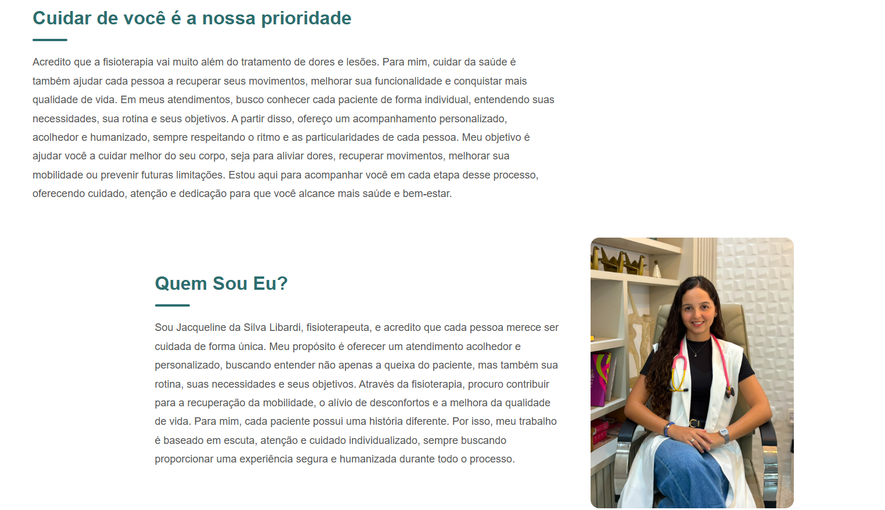

Conheça um pouco mais
Sobre mim
Sou desenvolvedor web em formação, com foco em desenvolvimento front-end. Tenho experiência prática na criação de sites utilizando HTML, CSS e JavaScript, além de Git e GitHub para gerenciamento e organização dos projetos.
Meu objetivo é desenvolver soluções web modernas, responsivas e funcionais, ajudando empresas e profissionais a estabelecerem uma presença digital profissional.
Tecnologias e ferramentas
Habilidades
Ferramentas
Como posso ajudar
Serviços
Sites institucionais
Criação de sites para empresas e profissionais apresentarem seus serviços, informações e formas de contato.
Landing pages
Páginas desenvolvidas com foco em apresentação de produtos, serviços ou campanhas.
Sites responsivos
Sites adaptados para computadores, tablets e celulares.
Funcionalidades JavaScript
Implementação de interações e funcionalidades dinâmicas em páginas web.
Manutenção de sites
Alterações, correções e melhorias em sites existentes.
Trabalhos selecionados
Projetos

Projeto 01
Site institucional
Site institucional moderno desenvolvido para uma empresa, com foco em apresentação dos serviços, experiência do usuário e responsividade.
Tecnologias: HTML, CSS e JavaScript.
Vamos criar algo juntos?
Entre em contato
Está procurando alguém para desenvolver ou melhorar seu site? Fale comigo por um dos canais abaixo.